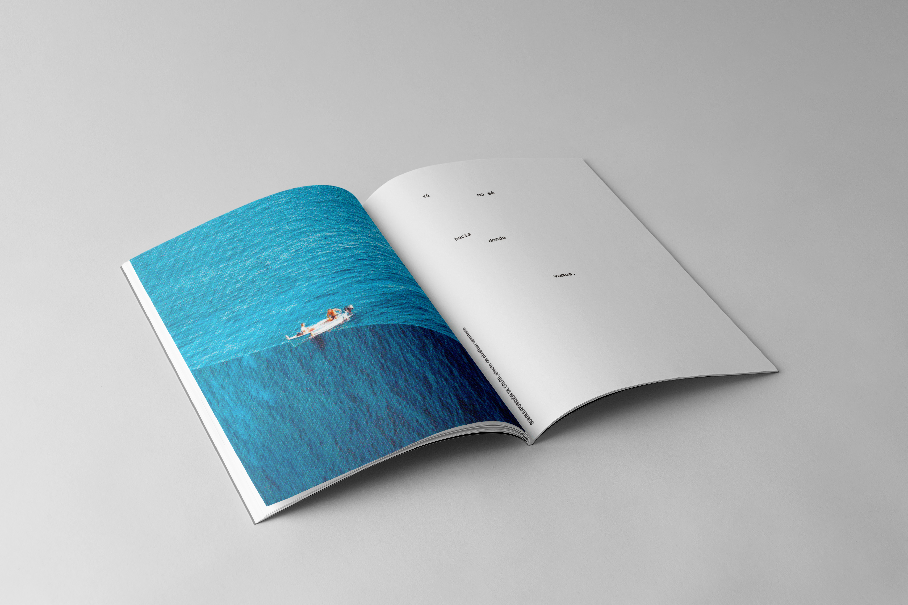
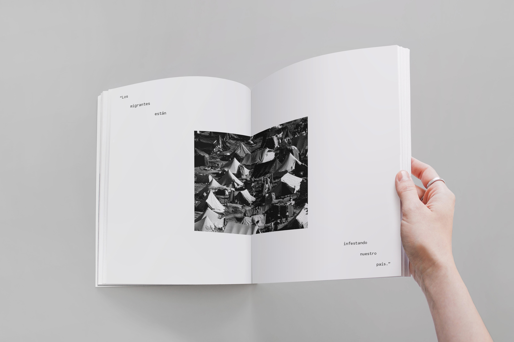
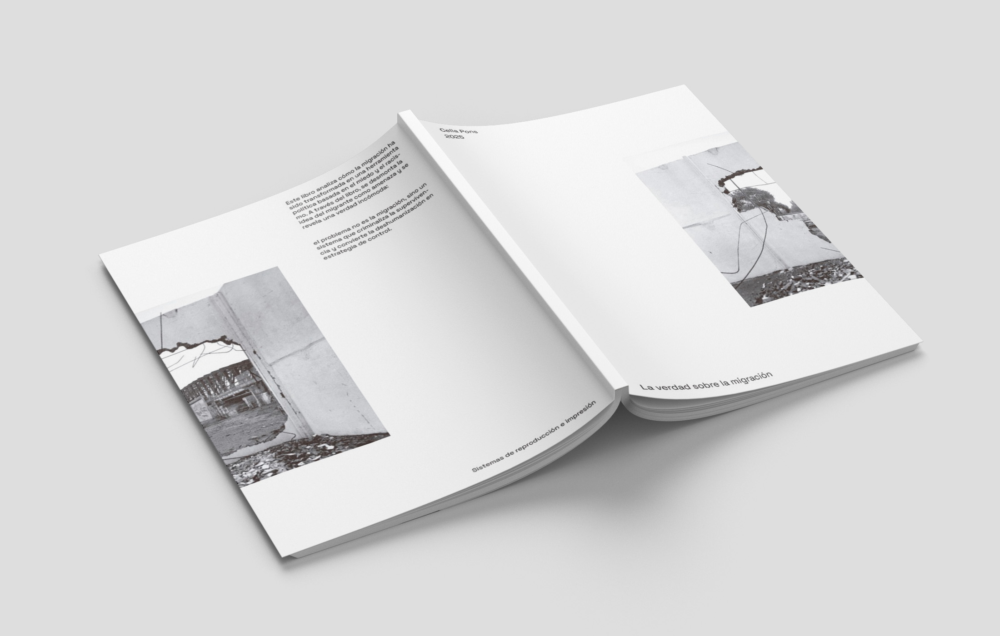

FANZINE: MIGRATIONS
A fanzine project focused on addressing the current reality of migration and the racist and hateful narratives that surround it. Through a restrained editorial language, stark imagery, and deliberate pacing, the project aims to question prejudice, confront misinformation, and give visual form to a deeply human social issue.


